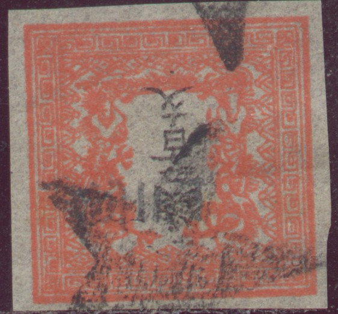
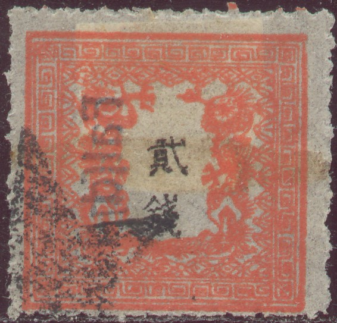
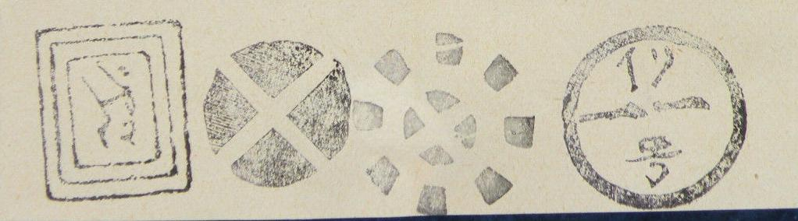
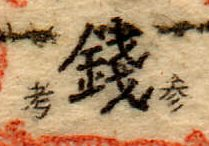
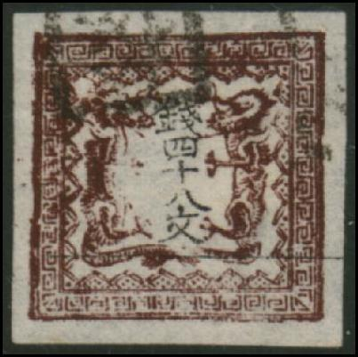

Note: on my website many of the
pictures can not be seen! They are of course present in the
catalogue;
contact me if you want to purchase it.
I've seen some reprints of the 'sen' issues, which were made in 1961 (all four values printed on a mini-sheet). The inscription is '1871-1961' with additional Japanese inscription.
Very dangerous engraved forgeries exist of these stamps. I'll describe some of the older 'simple' forgeries here.
A stamp forger active in forging these stamps was Kamigata and Wada Kotaro.
Some examples of forgeries:
Forgeries of the 100 m and 1 s


In the genuine stamps there are 10 key-patterns at each side (excluding the corner ornaments). In the above forgeries, there are only 9 patterns at the upper and right hand side. The other sides have 10 key-patterns as in the genuine stamps. These two forgeries can also be found in 'The Fournier Album of Philatelic Forgeries'.

Part of a page from a Fournier Album with Fournier forgeries.



Forgeries with a non-existing "NAGASAKI" and
"JOKOHAMA" cancels

Some San-Ko forgeries:


The word 'San-Ko' (in Japanese characters, this means something like 'forgery') is written in very small characters on the stamps:


Mihon forgery, the small 'Mi-hon' characters are placed at the
left and right top of the upper black character.
Other more deceptive forgeries:
(Reduced size)

Some forgeries made by Wada Kotaro in the late 19th century:

(Two forgeries, apparantly made by the same forger, possibly Kamigata)
Reprints made in 1961.


{kind=link}
{kind=link}
{kind=link}
{kind=link}